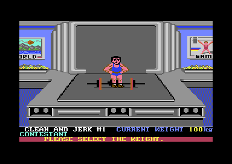
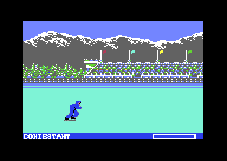
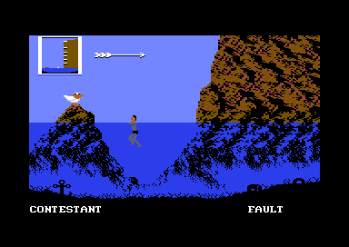
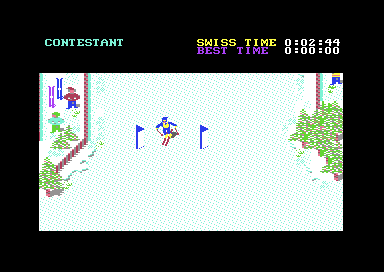
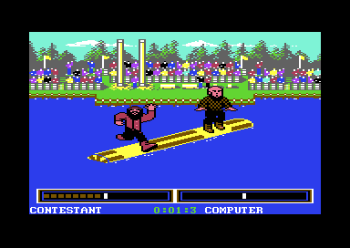
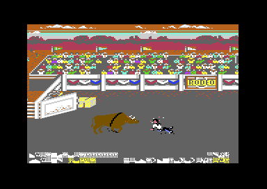
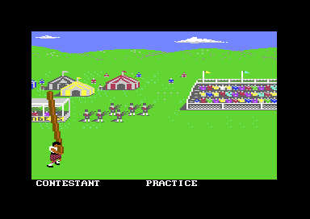
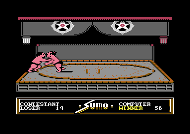

<meta charset="utf-8">
<meta name="viewport" content="width=device-width, initial-scale=1">
<title>World Games</title>
<link rel="preconnect" href="https://fonts.googleapis.com">
<link rel="stylesheet" href="https://fonts.googleapis.com/css2?family=Lato:wght@400;700;900&family=IBM+Plex+Mono:wght@400;500&display=swap">
<style>
:root{
  --bg:#23262d; --paper:#e9e7e1; --surface:#ffffff; --surface-2:#f1efea; --line:#d5d3cc; --line-soft:#e0ded8;
  --ink:#2f3136; --ink-soft:#55585f; --ink-mute:#80838a;
  --link:#1f5fa8; --link-hover:#154480; --accent:#1f5fa8;
  --amber:#c25a00; --cyan:#1f5fa8; --coral:#d04a3a; --green:#2a8a4a; --violet:#4a5bd6; --hl:#fff0c2;
  --chip:#2f3136; --chip-ink:#ffffff;
  --c64blue:#40318d; --c64grey:#686868;
  --fd:'Lato',system-ui,sans-serif; --fb:'Lato',system-ui,sans-serif; --fm:'IBM Plex Mono',ui-monospace,Menlo,monospace;
  --col:1080px; --gx:68px; --fs:17px; --lh:1.6; --hw:900; --h1:46px; --h2:26px; --sy:48px; --pp:26px; --r:10px;
  --plate-shadow:0 1px 2px rgba(0,0,0,.05),0 4px 14px rgba(0,0,0,.05);
}
*{box-sizing:border-box}
html{background:var(--bg);min-height:100%}
body{background:var(--paper);color:var(--ink);font-family:var(--fb);font-size:var(--fs);line-height:var(--lh);max-width:var(--col);margin:0 auto;min-height:100vh;padding:0 0 4rem}
h1,h2,h3{font-weight:var(--hw);letter-spacing:-.01em;text-wrap:balance;color:var(--ink);margin:0}
.wrap{padding:0 var(--gx)}
.hero{padding:48px var(--gx) 8px;text-align:left}
.eyebrow{font-family:var(--fm);font-size:12px;letter-spacing:.08em;text-transform:uppercase;color:var(--ink-mute);margin:0 0 10px}
.hero h1{font-size:var(--h1);line-height:1.15;letter-spacing:-.02em;margin:0 0 14px}
.hero .sub{margin:0 0 .6em;color:var(--ink-soft)}
section{padding:var(--sy) 0 24px}
section:last-of-type{border-bottom:none}
.fig{font-family:var(--fm);font-size:12px;letter-spacing:.08em;text-transform:uppercase;color:var(--ink-mute);margin:0 0 10px}
h2.t{font-size:var(--h2);margin-bottom:12px}
.lede{color:var(--ink-soft);margin:0 0 30px}
.plate{background:var(--surface);border:1px solid var(--line);border-radius:var(--r);padding:var(--pp);box-shadow:var(--plate-shadow)}
.cap{font-size:14px;color:var(--ink-mute);margin-top:14px;line-height:1.55}
.cap b{color:var(--ink);font-weight:700}
code{font-family:var(--fm);font-size:.82em;background:var(--chip);color:var(--chip-ink);border-radius:4px;padding:2px 6px;overflow-wrap:break-word;-webkit-box-decoration-break:clone;box-decoration-break:clone}

.wg-cv{display:block;width:100%;height:auto;image-rendering:pixelated;background:#000;border-radius:4px}
.wg-stack{position:relative}
.wg-stack canvas+canvas{position:absolute;left:0;top:0;width:100%;height:100%;background:transparent;pointer-events:none}
.wg-bar{display:flex;flex-wrap:wrap;gap:8px;margin:0 0 14px;align-items:center}
.wg-btn{font:inherit;font-family:var(--fm);font-size:12.5px;background:var(--surface);border:1px solid var(--line);border-radius:6px;padding:5px 11px;color:var(--ink);cursor:pointer;line-height:1.3}
.wg-btn:hover{border-color:var(--ink-mute)}
.wg-btn[aria-pressed="true"]{background:var(--accent);border-color:var(--accent);color:#fff}
.wg-out{font-size:15px;color:var(--ink);margin:12px 0 0;min-height:3em;line-height:1.55}
.wg-out b{font-weight:700}
.wg-pics{display:grid;grid-template-columns:repeat(4,minmax(0,1fr));gap:12px}
.wg-pics.two{grid-template-columns:repeat(2,minmax(0,1fr))}
.wg-pics figure{margin:0}
.wg-pics img{display:block;width:100%;height:auto;image-rendering:pixelated;border-radius:4px}
.wg-pics figcaption{font-size:13px;color:var(--ink-mute);margin-top:5px;line-height:1.4}
.wg-tbl{border-collapse:collapse;font-size:14px;width:100%;margin:4px 0 0}
.wg-tbl th,.wg-tbl td{text-align:left;vertical-align:top;padding:5px 8px;border-bottom:1px solid var(--line-soft)}
.wg-tbl th{font-weight:700;color:var(--ink-soft)}
.wg-tbl td.wg-n{font-family:var(--fm);font-size:13px;white-space:nowrap}
.wg-tbl tr.wg-on td{background:var(--hl)}
.wg-wrapx{overflow-x:auto}
.wg-field{display:flex;flex-wrap:wrap;gap:8px 14px;align-items:center;font-size:14px;margin:0 0 12px}
.wg-field label{color:var(--ink-soft)}
.wg-range{width:100%;max-width:360px;accent-color:var(--accent)}
.wg-mono{font-family:var(--fm);font-size:13px}
.wg-sub{font-size:14px;font-weight:700;color:var(--ink-soft);margin:16px 0 6px}
.wg-win{display:flex;gap:10px;margin:4px 0;align-items:center}
.wg-win em{font-style:normal;font-family:var(--fm);font-size:12px;color:var(--ink-soft);width:210px;flex:none}
.wg-win span{flex:1;min-width:0;height:16px}
.wg-win span i{display:flex;justify-content:flex-end;height:100%;background:var(--line);border-radius:3px;overflow:hidden}
.wg-win span b{display:block;height:100%;background:var(--green);min-width:2px}
.wg-bars{display:flex;gap:3px;align-items:flex-end;height:120px;margin:8px 0 0}
.wg-bars div{flex:1;min-width:0;display:flex;flex-direction:column;justify-content:flex-end;align-items:center;height:100%;cursor:pointer}
.wg-bars i{display:block;width:100%;background:var(--accent);border-radius:2px 2px 0 0;min-height:1px}
.wg-bars b{font-family:var(--fm);font-size:10.5px;font-weight:500;color:var(--ink-mute);margin-top:3px}
.wg-bars div.on i{background:var(--amber)}
.wg-bars div.over i{background:var(--coral)}
.wg-strip{display:grid;grid-template-columns:repeat(10,minmax(0,1fr));gap:4px}
.wg-strip button{font:inherit;font-family:var(--fm);font-size:12px;background:var(--surface-2);border:1px solid var(--line);border-radius:5px;padding:4px 0;cursor:pointer;color:var(--ink)}
.wg-strip button[aria-pressed="true"]{background:var(--accent);border-color:var(--accent);color:#fff}
.wg-mem{position:relative;height:34px;background:var(--surface-2);border:1px solid var(--line);border-radius:5px;margin:6px 0 4px;overflow:hidden}
.wg-mem i{position:absolute;top:0;bottom:0;border-right:1px solid rgba(255,255,255,.7)}
.wg-memx{display:flex;justify-content:space-between;font-family:var(--fm);font-size:11px;color:var(--ink-mute)}
.wg-key{display:inline-block;width:11px;height:11px;border-radius:2px;vertical-align:-1px;margin-right:6px}
.wg-chart{display:block;width:100%;height:auto}
@media (max-width:720px){:root{--gx:16px;--h1:34px;--pp:16px}.wg-pics{grid-template-columns:repeat(2,minmax(0,1fr))}.wg-strip{grid-template-columns:repeat(5,minmax(0,1fr))}.wg-win{flex-wrap:wrap;gap:2px}.wg-win em{width:100%}.wg-win span{flex:1 1 100%}}
</style>
<!-- tabs -->
<header class="hero">
  <p class="eyebrow">1986 · Epyx</p>
  <h1>World Games</h1>
  <p class="sub">Each of the eight events is a program of its own, written apart from the others and loaded over the last one. They share a music driver, copied nine times, and little else: each keeps its own clock, and bull riding's eight seconds last twenty-four.</p>
</header>
<main class="wrap">

<section id="game" data-part="">
  <p class="fig">01 · The game</p>
  <h2 class="t">Eight sports from eight countries</h2>
  <p class="lede">Up to eight players each pick a country and compete in eight events, from weightlifting in the Soviet Union to sumo in Japan, for medals and the world records saved on the disk.</p>
  <div class="plate">
    <div class="wg-pics">
      <figure><figcaption>Weightlifting, Soviet Union</figcaption></figure>
      <figure><figcaption>Barrel jumping, Germany</figcaption></figure>
      <figure><figcaption>Cliff diving, Mexico</figcaption></figure>
      <figure><figcaption>Slalom, France</figcaption></figure>
      <figure><figcaption>Log rolling, Canada</figcaption></figure>
      <figure><figcaption>Bull riding, United States</figcaption></figure>
      <figure><figcaption>Caber toss, Scotland</figcaption></figure>
      <figure><figcaption>Sumo, Japan</figcaption></figure>
    </div>
  </div>
  <p>The players take part in turns, each with three attempts in most events. Log rolling and sumo put two players on the screen at once, each on their own joystick, and the computer takes the other side when there is nobody to play it. After each event the medals go to the first three, with the winner's anthem, and after all eight the medals are added up for the champion: 5 points for gold, 3 for silver and 1 for bronze.</p>
  <p>Before each event an optional travelogue shows the country on a turning globe and explains the sport. The disk has two sides. Side 1 holds the title, the menu, the travelogue, the world records and the first four events. Side 2 holds the menu and the travelogue again, with the last four.</p>
</section>

<section id="music" data-part="">
  <p class="fig">02 · The music</p>
  <h2 class="t">Music: one driver, nine copies</h2>
  <p class="lede">The title and each of the eight events carry their own copy of the same music driver, each with its own tunes. Choose a part, then a tune.</p>
  <div class="plate">
    <div class="pick"><button type="button" class="step" data-d="-1" aria-label="The part before">‹</button><select id="wg-music-pick" aria-label="Part of the game"></select><button type="button" class="step" data-d="1" aria-label="The part after">›</button></div>
    <div id="wg-music"></div>
    <p class="cap" id="wg-music-cap"></p>
    <p class="cap">The game's own driver, running on the page over the part's bytes in its listing and called as the part calls it: once at the start, to build the note table and silence the chip, then with the tune's number in the A register to start it, then once a frame from the part's raster interrupt, the routine the video chip calls as it reaches a given line of the screen. The page starts each tune at volume 15, as the part's other tunes leave it, since a few never set the volume themselves. <code>test_music.js</code> holds every button to the game's code over the part's whole listing, every write to the sound chip in order, for a minute of each tune or until it ends.</p>
  </div>
  <p>A tune gives each of the three voices a track, and a track is a list of notes and commands: a byte below <code>$C0</code> is a note, <code>$60</code> a rest, the byte after it the note's length, <code>$C0</code> to <code>$E0</code> commands that change the sound, and <code>$FF</code> the end (<code>play_music</code>, <code data-part="title">$18B7</code> in the title). The same driver plays the title's music, a skater's crash and the wind on the cliff. In the events most tunes are sound effects, a few frames long.</p>
  <p>Each copy builds its note table when its part starts, and every copy builds the same one. Its top C, <code>$861E</code>, sounds at 2,093 Hz on an American NTSC machine, whose clock runs at 1,022,727 Hz. A European PAL machine runs at 985,248 Hz, so it plays every note about 65 cents flat, two thirds of a semitone. The player above plays it as a PAL machine does.</p>
  <p>Some tunes in the list are never started, and they are here too. A few entries play no note at all: they stop or quiet another sound, or give no voice anything to play.</p>
</section>

<section id="anthems" data-part="menu">
  <p class="fig">03 · The anthems</p>
  <h2 class="t">Music: an anthem for each country, and one for Epyx</h2>
  <p class="lede">The menu has a player of its own for the anthems the medal ceremonies play. Epyx is one of the eighteen countries, with a flag and an anthem of its own.</p>
  <div class="plate">
    <div id="wg-anthems"></div>
    <p class="cap">The menu's own player, running on the page over the menu's listing: <code>init_sound</code> (<code>$1E34</code>), then <code>start_tune</code> (<code>$1E71</code>) with the country's number in Y, then <code>anthem_step</code> (<code>$1EA2</code>) twice a frame, as the menu's interrupts call it. <code>test_music.js</code> holds every button to the menu's code, write for write, to each tune's end.</p>
  </div>
  <p>This player is far simpler than the driver in the events. A tune is a list of rows of four bytes: a note for each voice and a length (<code>tune_list</code>, <code>$32C0</code>). Each voice plays a note from a table of semitones (<code>note_freq_lo</code>, <code>$1DC4</code>), with the same attack, decay, sustain and release for every note, set once by <code>init_sound</code>. Every voice lets go of its note five steps before the row's end, so the notes are separated by a short gap.</p>
  <p>A country's tune comes from <code>country_tunes</code> (<code>$1E8A</code>), which holds two times the tune's number for each country in the order of the flags. Tunes 18 and 19 play under the final standings and the world records. On the screen where a player picks a country, the S key plays the anthem of the flag under the frame without choosing it.</p>
</section>

<section id="frame" data-part="caber-toss">
  <p class="fig">04 · One frame</p>
  <h2 class="t">The caber toss, rebuilt from memory</h2>
  <p class="lede">One frame of the caber toss, drawn by the page from the memory and the video chip's registers, its settings, as they were, and from every write to them during the frame.</p>
  <div class="plate">
    <div class="wg-bar" id="wg-frame-bar"></div>
    <div class="wg-stack"><canvas id="wg-frame" class="wg-cv" width="384" height="272" aria-label="The caber toss screen, rebuilt"></canvas><canvas id="wg-frame-hi" width="384" height="272"></canvas></div>
    <p class="wg-out" id="wg-frame-out"></p>
    <p class="cap">Recorded in VICE as the thrower runs up with the caber, and drawn by the site's C64 library line by line, with each register as it was when the beam reached it. 0 of the 104,448 pixels differ from VICE's own picture of the same frame.</p>
  </div>
  <p>The picture is made of characters, the C64's 8 by 8 tiles, in multicolour mode, where each tile has four colours. Three of them are the same for every tile on the screen, and the interrupt at line 98, a routine the video chip sets off as it reaches that line, changes all three, from sky to field: light blue, light grey and grey above, green, dark grey and light grey below. The scenery is a map 128 columns wide (<code>$8170</code>), and the event draws the 40 columns in view into the screen not shown, then swaps the two (<code>ct_draw_scenery</code>, <code>$197A</code>; <code>ct_swap_screens</code>, <code>$19DB</code>).</p>
  <p>The thrower and the caber are sprites, the chip's eight movable pictures. The caber is too tall for one, so it is a column of them, with the thrower beside it. The same eight sprites are used again below the picture, where the interrupt at line 251 moves them for the text row of names.</p>
</section>

<section id="memory" data-part="">
  <p class="fig">05 · Memory</p>
  <h2 class="t">Twelve programs, one at a time</h2>
  <p class="lede">The game is a small resident program, the shell, and eleven others it loads in turn: the title, the menu, the travelogue and the eight events. Choose one to see how it fills the C64's 64 KB.</p>
  <div class="plate">
    <div class="pick"><button type="button" class="step" data-d="-1" aria-label="The program before">‹</button><select id="wg-mem-pick" aria-label="Program"></select><button type="button" class="step" data-d="1" aria-label="The program after">›</button></div>
    <div class="wg-mem" id="wg-mem"></div>
    <div class="wg-memx"><span>$0000</span><span>$4000</span><span>$8000</span><span>$C000</span><span>$FFFF</span></div>
    <div class="wg-wrapx"><table class="wg-tbl" id="wg-mem-tbl"></table></div>
    <p class="cap">From each program's listing: the ranges its bytes fill and what they are. The shell's bytes stay in memory under every other program.</p>
  </div>
  <p>The shell sits in the low memory, from <code data-part="shell">$0800</code> to <code data-part="shell">$0FFF</code>: the eight players' records, a jump table, the loader and its prompt to turn the disk, and the world records, 20 bytes for each event. Every other program is one file, packed to save space on the disk. The shell's unpacker copies itself to <code data-part="shell">$D000</code>, where nothing else is kept, and unpacks the file in place from <code data-part="">$1000</code> upwards (<code data-part="shell">$0F00</code>). Slalom alone needs a second file, which the shell copies to <code data-part="slalom">$E000</code>: the skier's falls, the course's edges and the code that times the run, checks the gates and plays the music.</p>
  <p>The programs share nothing but the shell. Each event has its own interrupts, its own variables at the same addresses in the first 256 bytes of memory and its own copy of the music driver. An event leaves its result as text and as a number in the player's record (<code data-part="shell">$0810</code> and on), and the menu reads the numbers to hand out the medals.</p>
</section>

<section id="weightlifting" data-part="weightlifting">
  <p class="fig">06 · Weightlifting</p>
  <h2 class="t">The heavier the weight, the later the push</h2>
  <p class="lede">A lift is a script of poses, with windows where a push on the joystick counts. Only the last part of each window is good, and it shrinks as the weight goes up. Move the weight.</p>
  <div class="plate">
    <div class="wg-field"><label for="wg-wl-kg">Weight</label><input type="range" class="wg-range" id="wg-wl-kg" min="75" max="300" step="5" value="150"><span class="wg-mono" id="wg-wl-out"></span></div>
    <div id="wg-wl-wins"></div>
    <p class="cap">The windows of the snatch and of the clean and jerk, read from the lift's scripts (<code>wl_script_data</code>, <code>$2010</code>), each bar as long as its window. The green end is the good part. Its size is the window's length times the weight's factor, over 256, at least one frame (<code>wl_multiply</code>, <code>$1DCB</code>); <code>test_widgets.js</code> holds the page's sum to the game's routine for every length and factor.</p>
  </div>
  <p>The weight is chosen with left and right, 75 kg to 225 kg in steps of 5 (<code>wl_choose_weight</code>, <code>$13B7</code>). Once fire confirms it, the weight's factor comes from <code>wl_timing</code> (<code>$1493</code>), 31 bytes from <code>$FF</code> at 75 kg down to 1 at 225 kg. A push in the good part counts, and one before it sends the script to its failed lift.</p>
  <p>The table ends at 225 kg, but the weight does not. After a round with a good lift, the next round starts 5 kg above it, so a good lift at 225 kg is followed by 230 kg, and the game reads the 32nd factor from the next routine's code (<a href="discoveries.html#weights">Discoveries</a>). At 865 kg the plates stop the machine (<a href="discoveries.html#crash">Discoveries</a>).</p>
  <p>Held overhead, the lift goes to three judges. Each votes white while the hold is under 48 frames and red after, and two white lamps make a good lift (<code>wl_vote</code>, <code>$1577</code>).</p>
</section>

<section id="barrels" data-part="barrel-jumping">
  <p class="fig">07 · Barrel jumping</p>
  <h2 class="t">Friction grows with speed</h2>
  <p class="lede">The skater gains speed by pushing in rhythm with the stride, and loses some every frame to friction, more the faster the skater goes. Choose a speed.</p>
  <div class="plate">
    <div class="wg-bars" id="wg-bj-bars"></div>
    <p class="wg-out" id="wg-bj-out"></p>
    <p class="cap">Friction for each of the 16 levels of speed, in 256ths of a pixel a frame (<code>bj_friction</code>, <code>$1B66</code>), against what a push adds.</p>
  </div>
  <p>The speed's level is the speed in halves of a pixel a frame (<code>bj_stride</code>, <code>$1A9D</code>). A counter gains <code>$30</code> a frame, and each time it passes 256, about every fifth frame, the stride moves on by one of its eight states, chosen by the joystick: right, left or neither. Four of the states push, and from the sixth frame of a push the speed gains 48 a frame, 40 from level 8. Friction takes its level's amount every frame, pushing or not.</p>
  <p>Up to level 7 friction is 5 or 6, so the skater gathers speed easily. From level 8 it climbs fast, and at level 12 a push gains 40 while friction takes 45. Level 13's friction, 35, is lower than level 12's, out of line with the rest.</p>
</section>

<section id="cliff" data-part="cliff-diving">
  <p class="fig">08 · Cliff diving</p>
  <h2 class="t">The body position sets the fall</h2>
  <p class="lede">In the air, up on the stick tucks the diver and down straightens them. The position, from 0 tucked to 7 straight, chooses the drag, the fastest fall and the drift away from the cliff. Choose a position.</p>
  <div class="plate">
    <div class="wg-strip" id="wg-cd-pos" style="grid-template-columns:repeat(8,minmax(0,1fr))"></div>
    <div class="wg-wrapx"><table class="wg-tbl" id="wg-cd-tbl"></table></div>
    <div class="wg-sub">The levels</div>
    <div class="wg-wrapx"><table class="wg-tbl" id="wg-cd-lv"></table></div>
    <p class="cap">From the event's tables: <code>cd_drag</code> (<code>$1F35</code>), <code>cd_fall_limit</code> (<code>$1F45</code>), <code>cd_drift</code> (<code>$1F55</code>) and <code>cd_level_score</code> (<code>$2879</code>), the last in binary-coded decimal, two decimal digits to a byte. Speeds are in pixels a frame.</p>
  </div>
  <p>A dive starts with the most it can score for its level, 106 from the top down to 56 from the lowest, and loses points (<code>cd_level_score</code>, <code>$2879</code>). Each new push up or down costs 5 points; held, the position steps on every 6 frames at no further cost (<code>cd_body</code>, <code>$20C6</code>). The diver must reach the water straight: any other pose is a bad entry and a fault (<code>cd_entry</code>, <code>$16E1</code>).</p>
  <p>Under the water the diver must turn up with left at the right depth. Each frame of left too early, or of no left once the diver is deep, costs a point, and touching the bottom is a fault (<code>cd_water</code>, <code>$1F65</code>). The whole cliff, from the top level to the sea, is on the <a href="levels.html#cliff">Maps tab</a>.</p>
</section>

<section id="slalom" data-part="slalom">
  <p class="fig">09 · Slalom</p>
  <h2 class="t">A course of twenty sections from seven</h2>
  <p class="lede">The course is 176 rows of 65 columns, cut into seven sections of 25 rows. A run is twenty sections in a fixed order. Choose one of the twenty.</p>
  <div class="plate">
    <div class="wg-strip" id="wg-sl-order"></div>
    <canvas id="wg-sl" class="wg-cv" width="520" height="200" aria-label="One section of the slalom course" style="margin-top:12px"></canvas>
    <p class="wg-out" id="wg-sl-out"></p>
    <p class="cap">Drawn by the page from the course (<code>sl_course</code>, <code>$1000</code>), its colours (<code>$9000</code>) and the character set (<code>$4000</code>), in the order at <code>sl_sections</code> (<code>$C543</code>). The flags are left out here: the game writes them into the map as each section comes. The whole run, flags and all, is on the <a href="levels.html#slalom">Maps tab</a>.</p>
  </div>
  <p>The course's 65 columns wrap round, and the view shows 40 of them (<code>sl_draw_view</code>, <code>$8795</code>). The run starts at section 0 and ends at section 150, the finish, with the five in between used again in a set order: 25, 75, 100, 125, 75, 50, 25 and so on. There are 39 gates, placed by a row counter of one byte, which goes round at 256, so the first 256 rows of the run hold 20 gates and the rest 19.</p>
  <p>Left and right turn the skier a step at a time, and how long the stick must be held for a step depends on the stance and the speed (<code>sl_turn_frames</code>, <code>$8714</code>). With the stick up, at the slowest speed, a step takes 36 half frames; with fire held at the fastest, 3. A gate is missed when the skier passes both its flags on the same side (<code>sl_gate_check</code>, <code>$F2E5</code>): 5 seconds are added. A flag hit head-on is a fall only some of the time (<a href="discoveries.html#flags">Discoveries</a>).</p>
</section>

<section id="log" data-part="log-rolling">
  <p class="fig">10 · Log rolling</p>
  <h2 class="t">Points for a log that turns faster than you lean</h2>
  <p class="lede">Every 16 frames each lumberjack's points move by how much faster the log turns than they lean. In the first 30 seconds they go up; after that they come down. Set the log's speed and the lean.</p>
  <div class="plate">
    <div class="wg-field"><label for="wg-lr-log">Log's speed</label><input type="range" class="wg-range" id="wg-lr-log" min="0" max="31" value="20"><span class="wg-mono" id="wg-lr-log-out"></span></div>
    <div class="wg-field"><label for="wg-lr-lean">Lean</label><input type="range" class="wg-range" id="wg-lr-lean" min="0" max="23" value="6"><span class="wg-mono" id="wg-lr-lean-out"></span></div>
    <div class="wg-bar" id="wg-lr-time"></div>
    <div class="wg-bars" id="wg-lr-bars"></div>
    <p class="wg-out" id="wg-lr-out"></p>
    <p class="cap">The difference d chooses an entry of <code>lr_points_gain</code> (<code>$3490</code>) before 0:30 on the clock and of <code>lr_points_loss</code> (<code>$34B0</code>) after (<code>lr_points</code>, <code>$33D0</code>). <code>test_widgets.js</code> holds the page's sum to the game's routine for every speed and lean, either side of 0:30.</p>
  </div>
  <p>Each change of the stick between left, right and both is a step, which speeds up the lumberjack's feet the way they run (<code>lr_step</code>, <code>$2183</code>). The stick held still pushes the log, and fire turns the lumberjack round. The lean is the feet's speed less the log's, and a lean of 24 either way is a fall (<code>lr_lean</code>, <code>$2297</code>).</p>
  <p>The gain table climbs from 0 to 9 as the difference grows. The loss table runs the other way, 9 down to 0, so after 30 seconds a lumberjack who keeps the log turning fast loses least. The clock itself runs slow: it counts a second every 65 or 66 frames, 1.3 seconds on a PAL machine (<code>lr_clock</code>, <code>$3323</code>). At a fall the loser's points are quartered and kept below the winner's (<code>lr_fall_points</code>, <code>$34D0</code>).</p>
</section>

<section id="bull" data-part="bull-riding">
  <p class="fig">11 · Bull riding</p>
  <h2 class="t">Five bulls, five sets of odds</h2>
  <p class="lede">Each bull chooses its next move with a random number against five thresholds of its own. The table shows each bull's chances after each kind of move. Choose a bull.</p>
  <div class="plate">
    <div class="wg-bar" id="wg-br-bar"></div>
    <div class="wg-wrapx"><table class="wg-tbl" id="wg-br-tbl"></table></div>
    <div class="wg-bar" style="margin-top:12px"><button type="button" class="wg-btn" id="wg-br-roll">Roll a move</button></div>
    <p class="wg-out" id="wg-br-out"></p>
    <p class="cap">The thresholds are the bull's five bytes in <code>br_bull_odds</code> (<code>$2332</code>), against a random number from 0 to 255 (<code>br_choose_move</code>, <code>$222C</code>). <code>test_widgets.js</code> holds the page's rule to the game's routine for every bull, every move and every pair of random numbers.</p>
  </div>
  <p>A move is a buck, a run or a spin. To stay on, the rider must hold the stick the right way at one frame of each move: towards the head during a run, towards the tail during a buck, and down during a spin (<code>br_stick_left</code>, <code>$17A1</code>; <code>br_stick_right</code>, <code>$17C8</code>). The wrong way, or nothing, throws the rider off, and the ride scores nothing.</p>
  <p>A move's points depend on the move before it, so the score depends on the bull: Ferdinand mostly runs, and Earthquake bucks. The ride ends at 8 on the clock, which takes 24 seconds (<a href="discoveries.html#eight-seconds">Discoveries</a>). The bull's moves come from the frame counter and a generator called only by the bull and the pennants, so nothing the rider does changes them (<code>br_random</code>, <code>$2351</code>).</p>
</section>

<section id="caber" data-part="caber-toss">
  <p class="fig">12 · Caber toss</p>
  <h2 class="t">Feet by the pixel, inches by the bus</h2>
  <p class="lede">The toss is measured between two sprites: a foot for every 8 pixels, plus 10 feet, and the pixels left over for the inches. Move the gap.</p>
  <div class="plate">
    <div class="wg-field"><label for="wg-ct-gap">Gap</label><input type="range" class="wg-range" id="wg-ct-gap" min="0" max="255" value="141"><span class="wg-mono" id="wg-ct-gap-out"></span></div>
    <p class="wg-out" id="wg-ct-out"></p>
    <p class="cap">The gap between sprites 7 and 3, and the inches from <code>ct_inches</code> (<code>$2297</code>), indexed by twice the pixels left over plus one bit read from colour RAM (<code>ct_show_result</code>, <code>$2170</code>).</p>
  </div>
  <p>The thrower runs with left and right in time with the stride, and fire held plants the caber. While fire is held a count grows by the run's speed each frame, and each time it passes a threshold the caber leans a step further: <code>$38</code>, <code>$68</code>, <code>$90</code>, <code>$B4</code> and <code>$D4</code> (<code>$1CC2</code>, read at <code>$1AB5</code>). A lean of 5 fells it. Letting go throws it, and the caber must turn over and land on its far end (<code>ct_landing</code>, <code>$22AC</code>).</p>
  <p>The inches take one bit from a read of colour RAM, the memory that holds each character's colour, which holds only four bits a byte. The other four read as whatever was last on the data bus, the lines every chip shares with the processor, so the bit changes from one throw to the next, and below 4 pixels over it decides between two inches. The release has a quirk of its own (<a href="discoveries.html#caber">Discoveries</a>).</p>
</section>

<section id="sumo" data-part="sumo">
  <p class="fig">13 · Sumo</p>
  <h2 class="t">A score that drops every five seconds</h2>
  <p class="lede">A sumo score is the force of the bout, the speeds of the two wrestlers added up each frame they touch, divided by the bout's length. The length is counted in steps of 256 frames, so the score drops each time a bout passes another 5.12 seconds. Set the push.</p>
  <div class="plate">
    <div class="wg-field"><label for="wg-su-f">Force each frame</label><input type="range" class="wg-range" id="wg-su-f" min="16" max="1024" step="16" value="512"><span class="wg-mono" id="wg-su-f-out"></span></div>
    <canvas id="wg-su" class="wg-chart" width="640" height="220" aria-label="The winner's score against the bout's length"></canvas>
    <p class="wg-out" id="wg-su-out"></p>
    <p class="cap">The winner's score for a bout of steady pushing, for each length from 1 to 60 seconds: the total doubled, its upper 16 bits divided by the length in units of 256 frames plus one, and the loser's halved (<code>su_final_scores</code>, <code>$26DF</code>). <code>test_widgets.js</code> holds the page's sum to the game's routine on thousands of totals and lengths.</p>
  </div>
  <p>The wrestlers push by moving the stick, and each push costs strength, so pushing tires a wrestler (<code>su_push</code>, <code>$2495</code>). Each frame they touch, the force between them is added to both totals and again to the one winning the push; during a throw it counts double (<code>su_score_frame</code>, <code>$2615</code>). A wrestler who goes down, or puts a foot out of the ring, loses (<code>su_ring</code>, <code>$1F1F</code>).</p>
  <p>Dividing by whole steps of 256 frames makes a sawtooth. A bout of 5.1 seconds divides by 1 and one of 5.2 seconds by 2, so the same steady push scores about half as much in the longer bout.</p>
</section>

<section id="random" data-part="">
  <p class="fig">14 · Random numbers</p>
  <h2 class="t">Random numbers from five places</h2>
  <p class="lede">The events were written apart, and each found its random numbers in its own way.</p>
  <div class="plate">
    <div class="wg-wrapx"><table class="wg-tbl">
      <tr><th>Where</th><th>How</th></tr>
      <tr><td>Weightlifting</td><td>256 readings of the sound chip's third voice, left running as noise by the shell, kept at <code data-part="weightlifting">$0400</code> (<code data-part="weightlifting">wl_random</code>, <code data-part="weightlifting">$197D</code>)</td></tr>
      <tr><td>The menu</td><td>a generator in the last three bytes of the eighth player's record (<code data-part="menu">random</code>, <code data-part="menu">$1AD9</code>), from which sumo takes its seed and log rolling its frame counter</td></tr>
      <tr><td>Bull riding, cliff diving, log rolling, sumo</td><td>the frame counter added to a state that is shifted with feedback, each in its own copy (<code data-part="bull-riding">$2351</code>, <code data-part="cliff-diving">$2B20</code>, <code data-part="log-rolling">$2ED8</code>, <code data-part="sumo">$2B96</code>)</td></tr>
      <tr><td>The music drivers</td><td>voice 3's oscillator, for a command that plays a random note</td></tr>
      <tr><td>Caber toss</td><td>one bit of the data bus, read through colour RAM's missing upper half (<code data-part="caber-toss">$2170</code>)</td></tr>
    </table></div>
  </div>
  <p>The shell starts the third voice as noise at the frequency <code>$FFFF</code> (<code data-part="shell">sid_start</code>, <code data-part="shell">$0D18</code>), so the top eight bits of its output change too fast to follow. Weightlifting reads them 256 times at its start and keeps the readings, and later takes one at a time, such as the one that chooses between the two endings of a lift held too long (<code data-part="weightlifting">$1546</code>).</p>
</section>

</main>
<footer style="margin:16px 0 0;padding:22px var(--gx) 0;border-top:1px solid #e0ded8;font-family:'IBM Plex Mono',ui-monospace,Menlo,monospace;font-size:12px;color:#80838a"><a href="https://github.com/gamesexplained/gamesexplained" style="color:#1f5fa8;text-decoration:none">GitHub</a> · <a href="https://discord.gg/3V9GWyRDWV" style="color:#1f5fa8;text-decoration:none">Discord</a><br>© Games Explained contributors. Write-ups, facts and symbol maps are available under <a href="https://creativecommons.org/licenses/by-sa/4.0/" style="color:#1f5fa8;text-decoration:none">CC BY-SA 4.0</a>; code under <a href="https://opensource.org/licenses/MIT" style="color:#1f5fa8;text-decoration:none">MIT</a></footer>
<script src="../../lib/c64.js"></script>
<script src="../../lib/sid.js"></script>
<script src="../../lib/cpu6502.js"></script>
<script>
/* wg-music */
// createDriver for C64Sid: runs one part's copy of the music driver on the kit's 6502 (C64Cpu,
// from ../../lib/cpu6502.js, which sid.js passes to createDriver), its code, tracks and variables
// taken from the part's listing over the part's ranges in WG_MUSIC. D is { mem: [[address,
// bytes], ...], init, start, play, ptr, tunes: [tune number, ...] }. Each part calls its driver
// as init(t) does here: its entry that builds the note table and silences the chip (init), then
// LDA #tune and the entry that starts it (start), then play once a frame from its raster
// interrupt. A tune has ended when every voice's track pointer (ptr, +1, +3, +5 the high bytes)
// is 0. init(t) also sets the volume to 15 after the silence, where the part's other tunes leave
// it, for the few tunes that never set it. The registers that init writes reach the chip with
// the first frame's. A read of a SID register returns the data bus, and $D41B voice 3's
// oscillator, as readback gives them.
const WG_MUSIC = [
  { id: 'title', name: 'The title', init: 0x186E, start: 0x1840, play: 0x18B7, ptr: 0xA0,
    ranges: [[0x00A0, 0x00DF], [0x149F, 0x1927], [0x196C, 0x19C9], [0x19EB, 0x19F9], [0x1A0B, 0x1A1B], [0x1A65, 0x1A74], [0x1B65, 0x1B80], [0x1BA5, 0x1BA7], [0x1C08, 0x1C85], [0x1CAC, 0x1CD8], [0xC000, 0xC0BF]],
    tunes: [[1, 'Title tune']] },
  { id: 'weightlifting', name: 'Weightlifting', init: 0x283A, start: 0x280C, play: 0x2889, ptr: 0x90,
    ranges: [[0x0090, 0x00D1], [0x280C, 0x2917], [0x295C, 0x29B9], [0x29DB, 0x2A1C], [0x2A38, 0x2AD7], [0x2B0C, 0x2B70], [0x2B95, 0x2B97], [0x2C06, 0x2CB5], [0x2CCA, 0x32F5], [0x3700, 0x37BF]],
    tunes: [[1, 'Good lift'], [2, 'Weight step'], [3, 'Never started'], [4, 'Never started'], [5, 'Lifting'], [6, 'Push while standing'], [7, 'Weight down'],
      [8, 'Never started'], [9, 'Held too long'], [10, 'Held too long, 2'], [11, 'Held too long, 3'], [12, 'Lifting, 2'], [13, 'Opening']] },
  { id: 'barrel-jumping', name: 'Barrel jumping', init: 0xA039, start: 0xA00C, play: 0xA082, ptr: 0xA0,
    ranges: [[0x00A0, 0x00DF], [0xA00C, 0xA0F2], [0xA137, 0xA194], [0xA1B6, 0xA2B2], [0xA2E7, 0xA357], [0xA370, 0xA373], [0xA3D3, 0xAA4E], [0xC000, 0xC0BF]],
    tunes: [[1, 'Cleared'], [2, 'Fall over the barrels'], [3, 'Never started'], [4, 'Came down unprepared'], [5, 'Run-up'], [6, 'Slide'], [7, 'Take-off'],
      [8, 'Barrel hit'], [9, 'Fall'], [10, 'Barrel comes down'], [11, 'Barrel count'], [12, 'Never started'], [13, 'Opening']] },
  { id: 'cliff-diving', name: 'Cliff diving', init: 0xC12E, start: 0xC100, play: 0xC177, ptr: 0xB0,
    ranges: [[0x00B0, 0x00EF], [0xC100, 0xC289], [0xC2AB, 0xC2EC], [0xC308, 0xC3A7], [0xC3DC, 0xC46A], [0xC4C8, 0xC793], [0xC7AA, 0xC8C2], [0xC8D9, 0xCC4A], [0xFF00, 0xFFBF]],
    tunes: [[1, 'Splash'], [2, 'Wind'], [3, 'Waves'], [4, 'Now and then'], [5, 'Touching the bottom'], [6, 'Hitting the cliff'], [7, 'Start']] },
  { id: 'slalom', name: 'Slalom', init: 0xF612, start: 0xF5E2, play: 0xF65B, ptr: 0xC0,
    ranges: [[0x009B, 0x009B], [0x00C0, 0x00FF], [0xF000, 0xF0BF], [0xF5E2, 0xF714], [0xF76A, 0xF76D], [0xF78F, 0xF8AC], [0xF8C0, 0xF8DE], [0xF931, 0xF94C], [0xF9AC, 0xFA47], [0xFA5C, 0xFAD4], [0xFB00, 0xFE6D]],
    tunes: [[1, 'Start'], [2, 'Finish'], [3, 'Clock tick'], [4, 'Crash'], [5, 'Flag hit'], [6, 'Ski hiss'], [11, 'Fall'], [12, 'Start music'], [14, 'Gate missed']] },
  { id: 'log-rolling', name: 'Log rolling', init: 0x3A2D, start: 0x39F3, play: 0x3A87, ptr: 0xDB,
    ranges: [[0x00DB, 0x00FB], [0x0F18, 0x0F35], [0x3657, 0x3AFB], [0x3B4E, 0x3B53], [0x3BAC, 0x3BAF], [0x3BD1, 0x3C13], [0x3C32, 0x3D5D], [0x3D7D, 0x3D8A], [0x3DA7, 0x3DAC], [0x3DC1, 0x3DCE], [0x3DF1, 0x3EE9], [0xAC00, 0xACBF]],
    tunes: [[1, 'Splash'], [2, 'Crowd roar'], [3, 'Foot tap'], [4, 'Log rumble'], [5, 'Teeter'], [6, 'Teeter, never heard'], [7, 'Music'], [9, 'Second splash']] },
  { id: 'bull-riding', name: 'Bull riding', init: 0x2420, start: 0x23F2, play: 0x2469, ptr: 0xA0,
    ranges: [[0x00A0, 0x00DF], [0x23F2, 0x24D9], [0x251E, 0x257B], [0x259D, 0x2699], [0x26ED, 0x26FB], [0x270F, 0x273E], [0x2757, 0x275C], [0x27BA, 0x2845], [0x285A, 0x288A], [0x29EE, 0x2ED5], [0xC000, 0xC0BF]],
    tunes: [[1, 'Bull, frame 44'], [2, 'Ride over'], [3, 'Never started'], [4, 'Bull, frames 7, 10, 32'], [5, 'Bull, frames 5, 11, 36'], [6, 'Bull, frame 3'],
      [7, 'Bull, frame 15'], [8, 'Bull, frame 19'], [9, 'Bull, frames 1, 34'], [10, 'Start']] },
  { id: 'caber-toss', name: 'Caber toss', init: 0x244A, start: 0x241C, play: 0x2493, ptr: 0xA0,
    ranges: [[0x00A0, 0x00DF], [0x241C, 0x2503], [0x2548, 0x254C], [0x25A2, 0x25A5], [0x25C7, 0x26C3], [0x26F8, 0x2725], [0x2739, 0x2740], [0x2781, 0x27A3], [0x27E4, 0x2E3A], [0xC000, 0xC0BF]],
    tunes: [[1, 'Start'], [2, 'Good toss'], [3, 'Throw'], [4, 'Throw, 2'], [5, 'Run, pose 25'], [6, 'Run, pose 22'], [7, 'Release'], [8, 'Caber drops'], [9, 'Never started']] },
  { id: 'sumo', name: 'Sumo', init: 0x3345, start: 0x3309, play: 0x338E, ptr: 0xB0,
    ranges: [[0x00B0, 0x00EF], [0x3309, 0x33FE], [0x3443, 0x34A0], [0x34C2, 0x3503], [0x351F, 0x35BE], [0x35F3, 0x3611], [0x363C, 0x3663], [0x367C, 0x3681], [0x3693, 0x369E], [0x36DF, 0x376C], [0x377D, 0x3A7C], [0x3A8D, 0x3B7C], [0xCD00, 0xCDBF]],
    tunes: [[1, 'Bout'], [2, 'Result'], [3, 'Pose'], [4, 'Pose, 2'], [5, 'Pose, 3'], [6, 'Pose, 4'], [7, 'Belt grab']] },
];
// the entries that play no note, for the caption: [part, tune numbers, what they do]
const WG_SILENT = {
  'cliff-diving': 'Tune 8, started when a level is chosen, plays no note.',
  'slalom': 'Tunes 7 to 10 give no voice a track, and tune 13, started as a flag bends, plays no note.',
  'log-rolling': 'Tune 8 stops the log’s rumble and tune 10 quiets the sound; neither plays a note.',
  'sumo': 'Tune 8, started as a bout begins, plays no note.',
};
function createDriver(D, C64Cpu) {
  const base = new Uint8Array(0x10000);
  for (const [ad, bytes] of D.mem) base.set(bytes, ad);
  const sid = new Uint8Array(25);
  let m = base, cpu = null, writes = [], pend = [], bus = 0, osc3 = 0, stopped = true;
  const io = {                                                  // the chips at $D000-$DFFF
    read(ad) { if (ad >= 0xD400 && ad < 0xD800) return (ad & 0x1F) === 0x1B ? osc3 : bus; throw new Error('read $' + ad.toString(16)); },
    write(ad, val) {
      if (ad >= 0xD400 && ad < 0xD800) { const r = ad & 0x1F; if (r < 25) { sid[r] = val; writes.push(r, val); } bus = val; return; }
      throw new Error('write $' + ad.toString(16));
    },
  };
  const run = (ad, a) => cpu.call(ad, { a: a || 0, x: 0, y: 0 }, { maxSteps: 200000 });
  return {
    sid,
    get writes() { return writes; },
    init(t) {
      m = base.slice(); cpu = new C64Cpu.CPU(m, { port: 0x35, io });
      sid.fill(0); bus = 0; writes = [];
      run(D.init);                                              // the note table, and silence
      io.write(0xD418, 15);                                     // the volume the part's tunes leave
      run(D.start, D.tunes[t]);                                 // LDA #tune, and the start
      pend = writes; writes = []; stopped = false;
    },
    stop() { run(D.init); writes = []; pend = []; stopped = true; },
    play() { writes = pend; pend = []; run(D.play); },
    playing() { return !stopped && !!(m[D.ptr + 1] | m[D.ptr + 3] | m[D.ptr + 5]); },
    readback(env3, o3, b) { osc3 = o3; bus = b; },
    voice(x) { return { at: m[D.ptr + 2 * x] | m[D.ptr + 2 * x + 1] << 8 }; },
  };
}
// end of wg-music
</script>
<script>
/* wg-anthems */
// createAnthems for C64Sid: the menu's own anthem player on the kit's 6502, its code and tunes
// from the menu's listing over WG_ANTHEM_RANGES. init(t) runs init_sound ($1E34), which sets the
// chip up and marks no tune playing ($12 = $FF), then start_tune ($1E71) with Y the place in
// country_tunes ($1E8A) that holds two times tune t, as the menu does for a country. play() runs
// anthem_step ($1EA2) twice, as the menu's interrupts do each frame; stop() runs stop_tune
// ($1F1F). A tune plays while $12 is not $FF.
const WG_ANTHEM_RANGES = [[0x0010, 0x0013], [0x1C04, 0x1F39], [0x32C0, 0x3A19], [0x4023, 0x4158]];
const WG_ANTHEMS = ['United States', 'France', 'Great Britain', 'Soviet Union', 'Canada', 'Mexico', 'Japan', 'West Germany', 'Australia',
  'Netherlands', 'Austria', 'Italy', 'Spain', 'Brazil', 'Epyx', 'Norway', 'Ireland', 'Denmark', 'Final standings', 'World records'];
function createAnthems(D, C64Cpu) {
  const base = new Uint8Array(0x10000);
  for (const [ad, bytes] of D.mem) base.set(bytes, ad);
  const sid = new Uint8Array(25);
  let m = base, cpu = null, writes = [], pend = [];
  const io = {
    read(ad) { throw new Error('read $' + ad.toString(16)); },
    write(ad, val) {
      if (ad >= 0xD400 && ad < 0xD800) { const r = ad & 0x1F; if (r < 25) { sid[r] = val; writes.push(r, val); } return; }
      throw new Error('write $' + ad.toString(16));
    },
  };
  const run = (ad, y) => cpu.call(ad, { a: 0, x: 0, y: y || 0 }, { maxSteps: 100000 });
  return {
    sid,
    get writes() { return writes; },
    init(t) {
      m = base.slice(); cpu = new C64Cpu.CPU(m, { port: 0x35, io });
      sid.fill(0); writes = [];
      run(0x1E34);                                              // init_sound
      let y = 0;
      while (y < 24 && m[0x1E8A + y] !== 2 * t) y++;            // the country whose tune it is
      run(0x1E71, y);                                           // start_tune
      pend = writes; writes = [];
    },
    stop() { if (cpu) run(0x1F1F); writes = []; pend = []; },
    play() { writes = pend; pend = []; run(0x1EA2); run(0x1EA2); },
    playing() { return m[0x12] !== 0xFF; },
  };
}
// end of wg-anthems
</script>
<script>
/* wg-frame */
// One frame of the caber toss, as kit/c64/frame.py recorded it in VICE and trimmed it: the
// registers at its start, the writes during it, the colour RAM and the bytes the drawing reads.
const WG_FRAME = {"schema":1,"standard":"PAL","lines":312,"cycles":63,"about":"","vic":[47,191,47,205,48,205,44,205,57,127,57,148,57,165,57,186,0,16,0,0,0,255,212,0,31,118,241,0,253,0,239,112,240,254,255,252,240,248,240,241,240,242,241,249,249,249,249],"cia2":[198,63],"cpu":[47,53],"writes":[[98,19,53281,245,5],[98,25,53282,251,11],[98,31,53283,255,15],[234,11,53281,240,0],[239,12,53270,196,196],[251,27,53270,212,212],[251,42,53281,254,14],[251,48,53282,255,15],[251,54,53283,252,12],[253,34,53269,0,0],[258,9,53269,1,1],[261,47,53269,3,3],[265,24,53269,7,7],[269,1,53269,15,15],[270,8,53257,123,123],[271,17,17404,74,74],[271,22,18428,74,74],[272,41,53269,31,31],[273,49,53259,143,143],[276,21,53269,63,63],[277,29,53261,164,164],[280,1,53269,127,127],[281,9,53263,185,185],[282,18,17407,75,75],[282,23,18431,75,75],[283,44,53269,255,255],[286,6,53257,127,127],[287,15,17404,32,32],[287,20,18428,32,32],[289,47,53259,148,148],[293,27,53261,165,165],[297,7,53263,186,186],[298,16,17407,34,34],[298,21,18431,34,34]],"colour":"CwsLCwsLCwsLCwsLCwsLCwsLCwsLCwsLCwsLCwsLCwsLCwsLCwsLCwsJCQkJCQkJCQkJCQkJCQkJCQkJCQkJCQkJCQkJCQkJCQkJCQkJCQkJCQkJCQkJCQkJCQkJCQkJCQkJCQkJCQkJCQkJCQkJCQkJCQkJCQkJDQ0NDQ0NDQ0NDQ0NDQ0NDQ0NDQ0NDQ0NDQ0NDQ0NDQ0NDQ0NDQ0NDQ0NDQ0NDQ0NDQ0NDQ0NDQ0NDQ0NDQ0NDQ0NDQ0NDQ0NDQ0NDQ0NDQ0NDQ0NDQ0NDQ0NDQ0NDQ0NDQ0NDQ0NDQ0NDQ0NDQ0NDQ0NDQ0NDQ0NBQUFBQUFBQUFBQUFBQUFBQUFBQUFBQUFBQUFBQUFBQUFBQUFBQUFBQ4NDQ0DDQoPDQ0DAwMKDQoKDQ4NDQMNDQ0KDQ0JDw0NDQ0JCw0NDQ0ODg4OCgoKCg8PAwoNCgoKCgoKAwMDDQ4NDQ0JCQkJCQkJCQkJCQkJDg4OCgoKDw8PDw8PCQoKDwoKCgMNDQMDDQ0JCQwKDwkPDgwKDQwKCwoODQMDDQ8PDw8PDwMDDQ0DDQMNDQ0NDQ0NCQsPDg8KCwwKDA8LCg8JCQkJCQkJCQMDAwMNDQMNDQ0NAw0DDQ0NAwkOCg0MDwwKDw4MDw0OCQkJCQkJCQkDDQ0NDQ0KCg0KCgoKDQ0NDQ0JCQkJCQkJCQkJCQkJCQ8LCgkMDgkJAwMKCgoKCQoKCQ0JDQ0NDQMJCQkJDQkJCQkJCQkJCQkPDw8PDw8PCQMNCQ0JDQ0JDQ0NDQ0NDQMNDQ0NDQ0NDQMNDQ0DDQ0NAwMNAwMNAwMNDQMDAw0NDQ0NDQ0NDQ0NDQ0DDQ0DDQ0DDQMNAw0NDQ0NDQ0NDQ0NDQ0NDQ0NDQ0NDQ0NDQ0NDQ0NDQ0NDQ0NDQ0NDQ0NDQ0NDQ0NDQ0NDQ0NDQ0NDQ0NDQ0NDQ0NDQ0NDQ0NDQ0NDQ0NDQ0NDQ0NBgYGBgYGBgYGBgYGBgYGBgYGBgYGBgYGBgYGBgYGBgYGBgYGBgYGBgYGBgYGBgYGBgYGBgYGBgYGBgYGBgYGBgYGBgYGBgYGBgYGBgYGBgYGBgYGBgYGBgYGBgYGBgYGBgYGBgYGBgYGBgYGBgYGBgYGBgYGBgYGBgYGBgYGBgYGBgYGBgYGBgYGBgYGBgYGBgYGBgYGBgYGBgYGBgYGBgYGBgYGBgYGBgYGBgYGBgYGBgYGBgYGBgYGBgYGBgYGBgYGBgYGBgYFBQUFBQUFBQUFBQUFBQUFBQUFBQUFBQUFBQUFBQUFBQUFBQUFBQUFAQEBAQEBAQEBAQEBAQEBAQEBAQEBAQEBAQEBAQEBAQEBAQEBAQEBAQYGBgYGBgYGBgYGBgYGBgYGBgYGBgYGBg==","ram":[{"a":17408,"b":"AQAAAAAAAAAAAAAAAAAAAAAAAAAAAAAAAAAAAAAAAAAAAAAAAAAAAAIIBwYFAgICAgICAgICAgICAgICAgICAgIEAwICAgICAgICAgICAgICAgICAgICAgICAgICAgICAgICAgICERAPDg0MCwoJAgICAgICAgICKikoGicCAgICAiYlHhYiJCMiGSEgAgIfHhYdHBsaGRgXBBYVFBMTEkxLSklIR0ZFRENCQS8vL0A/Pj08Ozo5ODc2NS80LzMvMjEwLy4tLCsvLy8vLy8vLy8vVVQvU08vL1MvL1IvL08vODhSL08vUlEvLy9QT05N9/f39/f39/f39/f39/f39/f39/f39/f39/f39/f39/f39/f39/f3910CAgJgAmJhAgJgYGBfAl5dXFsCAlwCAgJbAgJaWQICAgJaWQICAgJvbm1bd3Z1dHNdYGwCcnFwb25tVlxcAmwCAgJramhpaGloamhpaGlomJeMkpaVlJNwb25tkpGQj46NjFwCAlZWAgKLioaFiYiIh4aHh4aFhKdsAqZcm5GQj46NjKWlAgKlAlYCAlxcXFwCpKOIh4iZhIaZhomGh4mvr6+vr6+vrqalpqYCAmACAgICXAJcXAICXK2shYeGiYaHiYeGiIeHvLy8u7y8u7q5AgICAgK4t1y4t7i3AgICAra1s7Ozs7Szs7Ozs7Szs8THxsPFxMPCubm4t7i3wLi3wMHAvwICAmC+vr6+vr6+vr6+vr6+vr7Qz87NzMvKybnBwMHAv8HAvwICAgICAlYCAgICAgICAlYCAgJWAgICpaUCpaUCpWACAlxcXAICAgICAgICAgICAgJWAgJWAgJWAlYCVgICAgICAgICAgICAgICAgICAgICAgICAgICAgICAgICAgICAgICAgICAgICAgICAgICAgICAgICAgICAgICAgICAgICAgICAgICAgICAgICAgICAgICAgICAgICAgICAgICAgICAgICAgICAgICAgICAgICAgICAgICAgICAgICAgICAgICAgICAgICAgICAgICAgICAgICAgICAgICAgICAgICAgICAgICAgICAgICAgICAgICAgICAgICAgICAgICAgICAgICAgICAgICAgICAgICAgICAgICAgICAgICAgICAgICAgICAgICAgICAgICAgICAgICAgICAgICAgICAgICAgICAgICAgICAgICAgICAgICAgICAgL39/f39/f39/f39/f39/f39/f39/f39/f39/f39/f39/f39/f39/f3AtTg3+XW5OXS3+Xx8fHx8fEC4ePS1OXa1NYCAgICAgICAgICAgICAg=="},{"a":18424,"b":"TFRVViAhISIoAACWAACmAACmAACmAACmAACmAACmAACmAACmAACmAACmAACmAACmAACmAACmAACmAACmAACmAACmAACmAAA="},{"a":18496,"b":"pgAApgAApgAApgAApgAApgAApgAApgAApgAApgAApgAApgAApgAApgAApgAApgAApgAApgAApgAApgAApgAA"},{"a":18560,"b":"pgAApgAApgAApgAApgAApgAApgAApgAApgAApgAApgAApgAApgAApgAApgAApgAApgAApgAApgAAmgAAKAAA"},{"a":21248,"b":"A/AAD/wAD/wAD3wADVAALUAAqUAAqoAAloAAlYAAlYAAJUAAJUAAOVAAP1VAP/UAAAAAAAAAAAAAAAAAAAAA"},{"a":21760,"b":"BFAAERAAREQAERAAREQAERIARGwAEYAARgAAKAAAAAAAAAAAAAAAAAAAAAAAAAAAAAAAAAAAAAAAAAAAAAAA"},{"a":21824,"b":"AqAACqAAqqgAqqgAqqgAqqgAqqAAqoAAqgAACgAACgAAKAAAoAAAAAAAAAAAAAAAAAAAAAAAAAAAAAAAAAAA"},{"a":21888,"b":"AEAAAUAABVAABVAABVQABVUABVVABVVABVFAAUJAAUsAAjoACjgACj8AKA8A6AAA/wAAPwAAAAAAAAAAAAAA"},{"a":30720,"b":"/wD/AAAAAAD/AD8AAAAAAAAAAAAAAAAAAAAAAAAAAAAAAAAAAAA//wAAAAAAANwAAAAAAADw/1UAAAAAD/N/VQAAAAAAAN8BAAAAAMwAAAAAAADcVQAAAADAfH9VAAAA8P//f1UAAAD8//99VUAAAP////1VVQAADz//11UAAAAAAA/9VQAAAAAAAAwBAAAAAAAA8P////8AAAD//////wAAAAD////+AAAAAA////8AAAAAAD///wAAAAAAAAC7AAAAAAAAwPsAAAAAAMD//wAAAADA////AAAAAP////8AAAAA///3/wAAAAA///3/AAAAAAAA//8AAAAAAAAAPwAAAAAAAADwAAAAAAAA8P8AAAAAAP///wAAAAAA/9//AAAAAAD///0AAAAAAAAPfwAAAAAAAAAPAAAAAAAA8PwAAMD8/////wDA////////AP////////9///v/7//7/7/3/7///////////////+v///////+r/v///////////7/v/u////+/7/7//+////7///6//////v/+v////+///7/7v///////ff///////////7//////6/7////////+////////D/////////+A67////////v+q////////+6/+q//////+//7vuu//3/////7///73///7/////7//////7////f///////////////////4///+//7v//gAPu//u////AADr/v////8AAO7//////wD+///////+/////v/f/////d//9///7/////3////////v//+/+/////v//////+///+/7/////6/////////+///////////v////////+/////////+//////////+///////////7/v///////v+/v//////wAgAAAAAgAA"},{"a":31432,"b":"wPD8AAAAAAANDAwMDAwMDAAADAg3Lj9mAAAACAAAwADwvICAgLDs+wAAAAAAAw8/AAAADAg/OyIAAgAAQAAIAKCoAAAAAFBUAgICAgICBhU="},{"a":31552,"b":"AAD/mUQR/6oAAP+dTh3/qgwM7x1MHe+qAAADAQwNDzoACAg/Py4VIgAAAMCwqOys8Kzr+r6v66q+7+v6vq+rqvvvrr76+uqqAAMPPvrrr6oAAAAAAAMPBQBAUJSlq29/pWlaVpWlpVVZZaaWWlpqVQABBRZaaaVVAAAAAAABBQU="},{"a":31776,"b":"VV2m9/t9f1tVWXu/f31ff1VVWbv3/3t/VVmZ7vt/f25VWZnuv35ualVZme77f35VNTXW1dVWVVUAAAAAAAMDA+zs7Ozk0EAA+vr6+vr6+lVrW1tbW1tbVaWVlZWVlZVVv7+/v7+/v1UODh4eXl5eVQAECA8FJgUiaVtffvrrr6qllZWVlZefWpWVlZWVlZVVBgYGFlZWVlX5+fn5+flVAGtbW1tbW1UAVZn7f39/X1U="},{"a":31960,"b":"AAAAAAMNNRU="},{"a":32024,"b":"alVVVWlVVVUDAw0NDQ0NNUIQAAAQAAAEgiAAAAAAIAAACAg8PCyUBg=="},{"a":32096,"b":"aVVVnVt/bmo1NTXW1dXa1QAArq66uuLiAACqqqqqqqo="},{"a":32152,"b":"/1VVmWaZZv//XV6dXp1e///V1dnW2db//fH1xdXVVVUAABFEUERQQBQUFCgoWX19AAAAAAAIAACCggICAgICAv//q6/zAwND//+qqv8RRBE="},{"a":32240,"b":"VQAAAAAAAAD/////////fxUZFRVic7NR//////31Ff8CAlZWWlpqahNHV1dXV1dXEUwZmf9+fn9EEWVl/v69/UQRWZn//35/BBFEVVWVVVU="},{"a":32328,"b":"qqmopKCQgECqV3/f91eqVapbd193d6pVqld/X39XqlWqX39Xd1eqVapbd3d3d6pVqpt3V3d3qlWqW3dbd1uqVQ=="},{"a":32400,"b":"HDZjf2Nj4wA="},{"a":32416,"b":"PmNgYGBjPgA="},{"a":32432,"b":"fzMwPDAzfwA="},{"a":32464,"b":"PBgYGBgYPAA="},{"a":32504,"b":"czM7PzczcwA+Y2NjY2M+AH4zMz4wMHgA"},{"a":32536,"b":"fjMzPjMzcwA+Y2A+A2M+AH5aGBgYGDwA"},{"a":32648,"b":"AAAAAAAAAAA="},{"a":32696,"b":"/////////wA="},{"a":32767,"b":"AA=="}],"capture":{"phase_cycles_uncertain":0,"frame_cycles":19656,"frame_ended_on_line":0,"picture_lines_low":0,"writes_account_for_end_state":true,"ram_bytes_changed_during_frame":4,"colour_cells_changed_during_frame":0}};
// end of wg-frame
</script>
<script>
/* wg-rules */
// The page's own sums, each held to the game's routine by test_widgets.js.
// wlGood: the good part of a weightlifting window of len frames at the weight's factor
// (wl_multiply, $1DCB: the high byte of len times factor; $1910 makes 0 into 1).
function wlGood(len, factor) { return ((len * factor) >> 8) & 0xFF || 1; }
// bullNext: bull riding's choice of the next move (br_choose_move, $222C) after a move of kind
// (0 a buck, 1 a run, 2 a spin), for the bull's five thresholds o, the random numbers r1 and, for
// a spin, r2. Gives the points, the next kind ('place' where the arena's place decides between a
// run and a spin, $22C2) and whether the bull turns round.
function bullNext(o, kind, r1, r2) {
  const spin = (pts) => r2 >= o[4] ? { pts: pts + (kind === 2 ? 3 : 0), next: 2, turn: true } : { pts, next: 2, turn: false };
  if (kind === 0) return r1 >= o[2] ? { pts: 5, next: 'place', turn: false } : spin(6);
  if (kind === 1) {
    if (r1 < o[0]) return { pts: 3, next: 'place', turn: false };
    if (r1 < o[1]) return spin(4);
    return { pts: 5, next: 0, turn: false };
  }
  return r1 < o[3] ? spin(3) : { pts: 4, next: 'place', turn: false };
}
// lrPoints: log rolling's change of points each 16 frames (lr_points, $33D0) for the log's
// speed and the lean (signed), before or after 0:30 on the clock, from the two tables.
function lrPoints(ram, log, lean, late) {
  const d = Math.max(0, Math.abs(log) - Math.abs(lean));
  return late ? -ram[0x34B0 + d] : ram[0x3490 + d];
}
// suFinal: a sumo score (su_final_scores, $26DF) from the 24-bit total and the bout's length in
// units of 256 frames ($95, 0 to 254), halved for the loser.
function suFinal(total, units, lost) {
  const top = ((total * 2) >>> 8) & 0xFFFF, q = Math.floor(top / (units + 1)) & 0xFFFF;
  return lost ? q >> 1 : q;
}
// end of wg-rules
</script>
<script>
/* wg-ui */
'use strict';
const $ = (id) => document.getElementById(id);
const hex = (n, w) => '$' + n.toString(16).toUpperCase().padStart(w || 2, '0');
const esc = (s) => String(s).replace(/[&<>]/g, (c) => ({ '&': '&amp;', '<': '&lt;', '>': '&gt;' }[c]));
function missing(el, what) { el.innerHTML = '<p class="cap">This needs ' + what + ', which did not load.</p>'; }
function button(bar, label, fn, pressed) {
  const b = document.createElement('button');
  b.type = 'button'; b.className = 'wg-btn'; b.textContent = label;
  b.setAttribute('aria-pressed', pressed ? 'true' : 'false');
  b.addEventListener('click', () => { for (const o of bar.querySelectorAll('.wg-btn')) o.setAttribute('aria-pressed', 'false'); b.setAttribute('aria-pressed', 'true'); fn(); });
  bar.appendChild(b);
  return b;
}
// a .pick control: the select and the steps either side of it
function picker(sel, names, fn) {
  names.forEach((n, i) => sel.add(new Option(n, i)));
  sel.addEventListener('change', () => fn(+sel.value));
  for (const s of sel.parentNode.querySelectorAll('.step')) s.addEventListener('click', () => {
    sel.value = (+sel.value + +s.dataset.d + names.length) % names.length; fn(+sel.value);
  });
}
const listings = {};
const part = (id) => listings[id] || (listings[id] = C64.load('parts/' + id + '/listing.json'));
// run a widget once its section comes near the screen
function whenNear(el, fn) {
  let done = false;
  new IntersectionObserver((es, ob) => { if (!done && es.some((e) => e.isIntersecting)) { done = true; ob.disconnect(); fn(); } }, { rootMargin: '600px' }).observe(el);
}

// ---- 02 the music
function musicWidget() {
  const sel = $('wg-music-pick'), box = $('wg-music'), cap = $('wg-music-cap'), players = [];
  function show(i) {
    for (const p of players) if (p) { p.hidden = true; const s = p.querySelector('[data-stop]'); if (s) s.click(); }
    const P = WG_MUSIC[i];
    cap.textContent = P.name + ': ' + P.tunes.length + (P.tunes.length === 1 ? ' tune' : ' tunes') + ', its driver at ' + hex(P.start, 4) + '. ' + (WG_SILENT[P.id] || '');
    if (players[i]) { players[i].hidden = false; window.dispatchEvent(new Event('resize')); return; }
    const div = document.createElement('div'); players[i] = div; box.appendChild(div);
    div.innerHTML = '<p class="cap">Loading ' + esc(P.name) + '’s listing…</p>';
    part(P.id).then((L) => {
      const data = { mem: P.ranges.map(([a, b]) => [a, L.ram.slice(a, b + 1)]), init: P.init, start: P.start, play: P.play, ptr: P.ptr, tunes: P.tunes.map((t) => t[0]) };
      div.innerHTML = '';
      C64Sid.mount(div, { driver: createDriver, data, tunes: P.tunes.map(([n, s]) => n + ' ' + s), filter: '6581',
        rows: [{ k: 'Track at', f: (v) => v.at ? hex(v.at, 4) : '-' }] });
      if (div.hidden) return;
      window.dispatchEvent(new Event('resize'));
    }, () => missing(div, P.name + '’s listing'));
  }
  picker(sel, WG_MUSIC.map((P) => P.name), show);
  show(0);
}
function anthemWidget() {
  part('menu').then((L) => {
    const data = { mem: WG_ANTHEM_RANGES.map(([a, b]) => [a, L.ram.slice(a, b + 1)]) };
    C64Sid.mount($('wg-anthems'), { driver: createAnthems, data, tunes: WG_ANTHEMS, rows: [] });
  }, () => missing($('wg-anthems'), 'the menu’s listing'));
}

// ---- 04 the frame
const FRAME_VIEWS = [
  ['The frame', null, 'The whole picture, as the video chip draws it.'],
  ['Without sprites', 'nosprites', 'The sprites switched off: the thrower, the caber and the names’ row of sprites have gone, and the scenery is all characters.'],
  ['The splits', 'splits', 'The raster lines where the interrupts change the registers: 98, where the three shared colours turn from sky to field; 234, where the background goes black for the text; and 251, where the text row’s colours and the sprites for the row of names are set.'],
  ['The sprites', 'sprites', 'The eight sprites at the start of the frame: the thrower and the column of sprites that makes the caber.'],
];
function frameWidget() {
  const cv = $('wg-frame'), hi = $('wg-frame-hi'), bar = $('wg-frame-bar'), out = $('wg-frame-out');
  const ctx = hi.getContext('2d');
  FRAME_VIEWS.forEach(([label, kind, text], i) => button(bar, label, () => {
    const F = Object.assign({}, WG_FRAME);
    if (kind === 'nosprites') { F.vic = F.vic.slice(); F.vic[0x15] = 0; F.writes = F.writes.filter((w) => w[2] !== 0xD015); }
    C64.drawFrame(cv, F, 1);
    ctx.clearRect(0, 0, 384, 272);
    ctx.strokeStyle = '#ffd34d'; ctx.fillStyle = '#ffd34d'; ctx.font = '10px monospace'; ctx.lineWidth = 1.5;
    if (kind === 'splits') for (const ln of [98, 234, 251]) {
      const y = ln - 16 + 0.5;                                 // the picture's first line is raster line 16
      ctx.beginPath(); ctx.moveTo(0, y); ctx.lineTo(384, y); ctx.stroke(); ctx.fillText('line ' + ln, 4, y - 3);
    }
    if (kind === 'sprites') {
      const v = WG_FRAME.vic;
      for (let s = 0; s < 8; s++) if (v[0x15] >> s & 1) {
        const xs = v[2 * s] + (v[0x10] >> s & 1 ? 256 : 0), ys = v[2 * s + 1];
        const px = xs - 24 + 32, py = ys - 50 + 35;
        const wd = v[0x1D] >> s & 1 ? 48 : 24, ht = v[0x17] >> s & 1 ? 42 : 21;
        ctx.strokeRect(px + 0.5, py + 0.5, wd, ht); ctx.fillText(String(s), px + 2, py - 2);
      }
    }
    out.textContent = text;
  }, i === 0));
  C64.drawFrame(cv, WG_FRAME, 1);
  out.textContent = FRAME_VIEWS[0][2];
}

// ---- 05 memory
const WG_MEMORY = [
  ['The shell', 'shell', [[0x02A7, 0x0303, 'the boot, over BASIC\u2019s main loop vector'], [0x0800, 0x08FF, 'the eight players\u2019 records, 32 bytes each, with the shell\u2019s variables in their spare bytes'], [0x0900, 0x0D30, 'the shell: the jump table, the loader, the disk prompt, the reset'],
    [0x0E00, 0x0EFF, 'the world records, 20 bytes an event'], [0x0F00, 0x0FFF, 'the unpacker as loaded, copied to $D000 to run']]],
  ['The title', 'title', [[0x1000, 0x1496, "the code: start-up, the two raster interrupts, the globe"], [0x1497, 0x183F, "the globe\u2019s phases and the title tune\u2019s three voices"], [0x1840, 0x1CC3, "the music driver and its top octave"], [0x3000, 0x377F, "the globe\u2019s map of the world, six character rows of 40 multicolour cells"], [0x3960, 0x3B0F, "the globe\u2019s round outline as six rows of masks"], [0x5800, 0x597F, "the six sprites behind the globe"], [0x5A40, 0x5E3F, "the second set of credits, the bottom rows of a second bitmap"], [0x6000, 0x7F3F, "the title picture, a multicolour bitmap, with its screen colours at $7F40 and colour RAM at $8328"]]],
  ['The menu', 'menu', [[0x1000, 0x1F37, "the menu\u2019s code, its texts and the anthem player"], [0x1C04, 0x1E33, "anthems in rows of four bytes, the notes\u2019 frequencies and the rows\u2019 lengths"], [0x2000, 0x26B7, "the character set, with the pieces of the flags"], [0x26B8, 0x30C5, "the eighteen flags as three strips of characters and colours"], [0x3100, 0x32BF, "the sprites: the arrow and the four corners of the frame round the chosen flag"], [0x32C0, 0x3A38, "the list of tunes and the other anthems; tune 19 for the world records, tune 18 for the final standings"], [0x3A39, 0x4158, "the registration: its interrupts, the keyboard, names and countries"], [0x4159, 0x43FF, "zeros nothing reads"]]],
  ['The travelogue', 'travelogue', [[0x1000, 0x1592, "the code: start-up, the two raster interrupts, the globe, the frame, the page"], [0x1593, 0x1690, "the pages\u2019 and names\u2019 pointers and the table of screen codes"], [0x1691, 0x2410, "the eight pages about the events, 432 characters each"], [0x2411, 0x24EC, "draw_picture, which draws a picture cell by cell"], [0x24ED, 0x27FF, "the pictures\u2019 pointers and the first pictures"], [0x3000, 0x33FF, "the globe\u2019s map and its round masks, the same bytes as the title\u2019s"], [0x3960, 0x3B0F, "the globe\u2019s map and its round masks, the same bytes as the title\u2019s"], [0x7000, 0x73FF, "the character set of the text window"], [0x9000, 0x9FFF, "the pictures: the airliner and one for each event"]]],
  ['Weightlifting', 'weightlifting', [[0x1000, 0x1F28, "the code: the rounds, the weight, the judges, the interrupts, the scripts, the plates"], [0x1C53, 0x1D34, "the plates\u2019 column writer, 75 STA instructions in a row"], [0x2000, 0x23FF, "the lift\u2019s eight scripts"], [0x2700, 0x27FF, "the bar\u2019s height for each of the 97 poses"], [0x2800, 0x32FF, "the music driver, its jump table at $2800, and the tracks"], [0x3800, 0x3BFF, "the font of the three text rows"], [0x3C00, 0x3FFF, "colour RAM\u2019s four pages, copied to $D800"], [0x5C00, 0x7F3F, "the arena: the bitmap\u2019s colours and the multicolour bitmap"], [0x8100, 0x8E80, "the poses: for each, the number of sprites and four bytes a sprite"], [0x9000, 0xC37F, "the lifter\u2019s sprite shapes, 206 of 64 bytes"]]],
  ['Barrel jumping', 'barrel-jumping', [[0x1000, 0x2489, "the code: the run, the stride, the interrupts, the falls, the scene"], [0x268A, 0x2869, "zeros nothing reads"], [0x286A, 0x2991, "the hidden credits screen and its two names"], [0x2992, 0x2BFF, "zeros nothing reads"], [0x4000, 0x47FF, "the upper character set: mountains, stands, flags"], [0x4800, 0x4BE7, "the screen"], [0x5000, 0x57FF, "the lower character set: letters, the meter, the barrels and the ice"], [0x5800, 0x7C7F, "the sprites\u2019 shapes, the 64th byte of each its colour and flags"], [0x8000, 0x895F, "the scenery: the top rows and the 120-column band, with their colours"], [0x8B00, 0x924F, "the poses"], [0xA000, 0xABFF, "the music driver and its tracks"]]],
  ['Cliff diving', 'cliff-diving', [[0x1000, 0x2B4A, "the code: the states of a dive, the interrupts, the scroll, the poses\u2019 lists"], [0x3000, 0x3FFF, "the cliff\u2019s map, 40 characters a row, about 102 rows from the top to the sea"], [0x4800, 0x4FFF, "the character set: cliff, sky and sea"], [0x5000, 0x52FF, "the letters of the text row"], [0x5300, 0x6FFF, "the sprite shapes that stay; $7000 takes one of three sets copied in"], [0x8000, 0x8FFF, "the poses: a count of sprites, then four bytes for each"], [0x9000, 0x9FFF, "the cliff\u2019s colour map, as the map"], [0xA000, 0xC0FF, "the three sprite sets"], [0xC100, 0xCC5A, "the music driver and its tracks"], [0xE000, 0xF680, "the colour scroll, 5760 bytes of LDA/STA written at the start"]]],
  ['Slalom', 'slalom', [[0x1000, 0x3CAF, "the course, 176 rows of 65 characters"], [0x3FA7, 0x3FFA, "stubs nothing runs, and the interrupt\u2019s entry at $3FCC"], [0x4000, 0x47FF, "the character set: snow, scenery, flags, banner and the status rows\u2019 letters"], [0x4800, 0x4FFF, "the two screens the course is drawn into in turn"], [0x5000, 0x7CFF, "the sprite shapes: skiing, the bending flag, the stops; $7000-$7CFF swapped with $E000"], [0x8000, 0x8F65, "the code: the runs, the interrupts, the stick, the drawing"], [0x9000, 0xBCAF, "the course\u2019s colours, a byte for each character"], [0xBE80, 0xC59F, "more code: the finish banner\u2019s split, the flags\u2019 placing, the order of sections"], [0xC600, 0xCC85, "the sprite frames, 67 of them"], [0xE000, 0xECFF, "the falls\u2019 shapes, swapped into $7000 once the skier is away"], [0xED00, 0xEFFF, "the course\u2019s edges and the gates\u2019 flags"], [0xF000, 0xF0BF, "the music\u2019s frequency table, built at the start"], [0xF100, 0xFEFF, "the stick, the timer, the results, the gates and flags, the music driver and its tracks"]]],
  ['Log rolling', 'log-rolling', [[0x1000, 0x3656, "the code: the bouts, the interrupts and the sprite bands, the balance, the computer, the clock and points"], [0x3657, 0x3EE8, "the music: the tunes\u2019 tracks, fourteen tracks, the driver"], [0x7000, 0x73FF, "the text row\u2019s character set"], [0x7400, 0x77FF, "the screen, with the sprite pointers at $77F8"], [0x7800, 0x7FFF, "the picture\u2019s character set: trees, crowd, flags, shore, the log and the meters"], [0x8D80, 0x8FFF, "the crowd\u2019s four pictures for its cheer"], [0x9000, 0x9C90, "the standing lumberjacks, packed: shapes and pictures\u2019 records"], [0xAC00, 0xAFFF, "the screen\u2019s colours, later the music\u2019s frequency table and the unpacker\u2019s tables"], [0xB000, 0xC813, "lumberjack 1\u2019s fall, packed"], [0xE000, 0xF9A4, "lumberjack 2\u2019s fall, packed"]]],
  ['Bull riding', 'bull-riding', [[0x1000, 0x2331, "the code: the ride, the three-frame chain of interrupts, the bulls\u2019 moves"], [0x2332, 0x29ED, "the bulls\u2019 odds, the random numbers, the scores and the music driver"], [0x29EE, 0x2ED6, "the tunes and their tracks"], [0x2ED7, 0x2FF0, "the hidden credits screen and its two names"], [0x301D, 0x33FF, "each frame\u2019s sprite offsets, facing left and facing right"], [0x4000, 0x47FF, "the arena\u2019s character set"], [0x4800, 0x4BFF, "the letters of the text rows"], [0x4C00, 0x53FF, "the two screens the arena is drawn into in turn"], [0x5400, 0x55FF, "the eight sprites\u2019 shapes for the frame shown, copied or mirrored"], [0x5600, 0x85FF, "the bull\u2019s and rider\u2019s sprite shapes"], [0x9400, 0x95FF, "a copy of the offsets table nothing reads"], [0x9600, 0x9FFF, "the poses, 33 bytes each"], [0xA000, 0xB3FF, "the sky\u2019s rows, the arena\u2019s map (120 columns a row, $A0A0) and its colours"], [0xC100, 0xC2FF, "the tables that mirror a sprite, built at the start"]]],
  ['Caber toss', 'caber-toss', [[0x1000, 0x2410, "the code: the attempt, the run, the hold and the release, the caber\u2019s flight and landing, the result"], [0x241C, 0x2E3A, "the music driver and its tracks"], [0x4000, 0x47FF, "the two screens, swapped as the scenery scrolls"], [0x4800, 0x763F, "the sprite shapes, the 64th byte of each its colour and flags; $6640-$77BF swapped with the second set"], [0x7800, 0x7FFF, "the character set"], [0x8000, 0x8FFF, "the top rows, the scenery map and its colours"], [0x9000, 0x9B4A, "the poses: a table of 119 and their data, a count and four bytes a sprite"], [0xA000, 0xB1BF, "the second set of sprite shapes, 18 pages"]]],
  ['Sumo', 'sumo', [[0x1000, 0x2811, "the code: the interrupts and the sprites, the bout\u2019s states, the wrestlers\u2019 states, the scores"], [0x2812, 0x2B95, "each pose\u2019s next poses, events, moves, feet and sounds"], [0x2B96, 0x2C41, "the random numbers, and the readout nothing calls"], [0x2C42, 0x2FFF, "zeros nothing reads"], [0x3300, 0x3BFF, "the music driver and its tracks"], [0x3C00, 0x3FFF, "the ring\u2019s colour RAM, copied to $D800 at the start"], [0x4000, 0x5F3F, "the multicolour bitmap of the ring and the crowd"], [0x6000, 0x67FF, "the character set of the three text rows"], [0x6800, 0x6BE7, "the screen: the bitmap\u2019s colours for rows 0 to 21, then the text rows"], [0x6C00, 0x6FFF, "the sixteen sprites\u2019 shapes for the frame: the left wrestler\u2019s turned round, the right one\u2019s as they are"], [0x7000, 0x7C3F, "the 90 poses: where each is, then its sprites, each a place and a shape"], [0x7C40, 0xB93F, "the sprite shapes"], [0xCC00, 0xCCFF, "the table that turns a multicolour byte round, built at the start"], [0xCD00, 0xCDBF, "the music\u2019s frequency table, built at the start"]]],
];
const MEM_COLS = ['#1f5fa8', '#c25a00', '#2a8a4a', '#4a5bd6', '#d04a3a', '#8a6d1f', '#3a8f9b', '#9b3a7d', '#55585f', '#6a9b2a'];
function memoryWidget() {
  const sel = $('wg-mem-pick'), bar = $('wg-mem'), tbl = $('wg-mem-tbl');
  function show(i) {
    const [name, id, rows] = WG_MEMORY[i], all = i ? WG_MEMORY[0][2].map((r) => r.concat('shell')).concat(rows) : rows;
    bar.innerHTML = all.map((r, k) => '<i style="left:' + (r[0] / 655.36) + '%;width:' + Math.max(0.3, (r[1] - r[0] + 1) / 655.36) + '%;background:' +
      (r[3] ? '#b8b5ad' : MEM_COLS[k % MEM_COLS.length]) + '" title="' + esc(hex(r[0], 4) + '-' + hex(r[1], 4) + ': ' + r[2]) + '"></i>').join('');
    let h = '<tr><th>From</th><th>To</th><th>What</th></tr>';
    all.forEach((r, k) => {
      const p = r[3] || id;
      h += '<tr><td class="wg-n"><span class="wg-key" style="background:' + (r[3] ? '#b8b5ad' : MEM_COLS[k % MEM_COLS.length]) + '"></span><a href="source-' + p + '.html#' + r[0].toString(16).toUpperCase().padStart(4, '0') + '">' + hex(r[0], 4) +
        '</a></td><td class="wg-n">' + hex(r[1], 4) + '</td><td>' + esc(r[2]) + (r[3] ? ' (the shell)' : '') + '</td></tr>';
    });
    tbl.innerHTML = h;
  }
  picker(sel, WG_MEMORY.map((r) => r[0]), show);
  sel.value = 7; show(7);
}

// ---- 06 weightlifting
function wlWidget(ram) {
  const kg = $('wg-wl-kg'), out = $('wg-wl-out'), box = $('wg-wl-wins');
  // the windows of scripts 2 (the snatch) and 3 (the clean and jerk), from the scripts' steps
  function windows(s) {
    let a = ram[0x2000 + 2 * s] | ram[0x2001 + 2 * s] << 8; const end = ram[0x2002 + 2 * s] | ram[0x2003 + 2 * s] << 8, w = [];
    while (a < end) {
      const b = ram[a];
      if (b === 0) a += 2; else if (b === 0xF0 || b === 0xF4) a += 3; else if (b === 0xF3) a += 1; else if (b === 0xF6) a += 2;
      else if (b > 0xF0) { w.push([b & 15, ram[a + 1]]); a += 4; } else a += 2;
    }
    return w;
  }
  const dirs = (d) => ['up', 'down', 'left', 'right'].filter((n, i) => d >> i & 1).join(' and ') || 'none';
  const lifts = [['The snatch', windows(2)], ['The clean and jerk', windows(3)]];
  function show() {
    const w = +kg.value, x = w / 5 - 15, f = ram[0x1493 + x];
    out.textContent = w + ' kg: factor ' + hex(f) + ' (' + f + ') from ' + hex(0x1493 + x, 4) + (x > 30 ? ', past the end of the table' : '');
    let h = '';
    for (const [name, ws] of lifts) {
      h += '<div class="wg-sub">' + name + '</div>';
      for (const [d, len] of ws) {
        const g = wlGood(len, f);
        h += '<div class="wg-win"><em>' + dirs(d) + ', ' + len + ' frames, ' + g + ' good</em><span><i style="width:' + (100 * len / 160) + '%"><b style="width:' + (100 * g / len) + '%"></b></i></span></div>';
      }
    }
    box.innerHTML = h;
  }
  kg.addEventListener('input', show);
  show();
}

// ---- 07 barrel jumping
function bjWidget(ram) {
  const bars = $('wg-bj-bars'), out = $('wg-bj-out'), fr = Array.from(ram.slice(0x1B66, 0x1B76));
  function show(l) {
    for (const [i, d] of Array.from(bars.children).entries()) d.className = (i === l ? 'on ' : '') + (fr[i] > (i < 8 ? 48 : 40) ? 'over' : '');
    const gain = l < 8 ? 48 : 40;
    out.innerHTML = 'Level <b>' + l + '</b>, ' + (l / 2) + ' pixels a frame: friction takes <b>' + fr[l] + '</b> a frame, and a push adds <b>' + gain + '</b>. ' +
      (gain > fr[l] ? 'A frame of pushing gains ' + (gain - fr[l]) + '.' : 'A push gains nothing: friction is ' + (fr[l] - gain) + ' more.');
  }
  bars.innerHTML = fr.map((v, i) => '<div title="level ' + i + ': ' + v + '"><i style="height:' + (v / 70 * 100) + '%"></i><b>' + i + '</b></div>').join('');
  Array.from(bars.children).forEach((d, i) => d.addEventListener('click', () => show(i)));
  show(9);
}

// ---- 08 cliff diving
function cdWidget(ram) {
  const w = (a) => ram[a] | ram[a + 1] << 8, strip = $('wg-cd-pos'), tbl = $('wg-cd-tbl');
  const px = (v) => (v / 256).toFixed(2);
  function show(p) {
    for (const [i, b] of Array.from(strip.children).entries()) b.setAttribute('aria-pressed', i === p ? 'true' : 'false');
    let h = '<tr><th>Position</th><th>Drag a frame</th><th>Fastest fall</th><th>Drift from the cliff</th></tr>';
    for (let i = 0; i < 8; i++) h += '<tr' + (i === p ? ' class="wg-on"' : '') + '><td class="wg-n">' + i + (i === 0 ? ', tucked' : i === 7 ? ', straight' : '') + '</td><td class="wg-n">' + hex(w(0x1F35 + 2 * i), 4) + ', ' + px(w(0x1F35 + 2 * i)) +
      '</td><td class="wg-n">' + hex(w(0x1F45 + 2 * i), 4) + ', ' + px(w(0x1F45 + 2 * i)) + '</td><td class="wg-n">' + hex(w(0x1F55 + 2 * i), 4) + ', ' + px(w(0x1F55 + 2 * i)) + '</td></tr>';
    tbl.innerHTML = h;
  }
  for (let i = 0; i < 8; i++) { const b = document.createElement('button'); b.type = 'button'; b.textContent = i; b.addEventListener('click', () => show(i)); strip.appendChild(b); }
  show(7);
  let h = '<tr><th>Level</th><th>Most it can score</th></tr>';
  for (let i = 0; i < 6; i++) { const v = w(0x2879 + 2 * i); h += '<tr><td class="wg-n">' + i + (i === 0 ? ', the highest' : i === 5 ? ', the lowest' : '') + '</td><td class="wg-n">' + v.toString(16) + '</td></tr>'; }
  $('wg-cd-lv').innerHTML = h;
}

// ---- 09 slalom
// one row of the course, 65 characters from $1000 + 65 row, coloured from $9000 + 65 row: in
// multicolour mode, a character whose colour has bit 3 set is drawn in four colours (the
// background white, $D022 grey, $D023 light red and its own), the rest in two (sl_init, $8106)
function slRow(ctx, ram, row, y, x0, cols, s) {
  const bgc = [1, 0x0C, 0x0A], img = ctx.createImageData(cols * 8 * s, 8 * s), rgb = C64.PAL.map((h) => [1, 3, 5].map((i) => parseInt(h.substr(i, 2), 16)));
  for (let c = 0; c < cols; c++) {
    const col = (x0 + c) % 65, ch = ram[0x1000 + 65 * row + col], cc = ram[0x9000 + 65 * row + col] & 15;
    for (let py = 0; py < 8; py++) {
      const bits = ram[0x4000 + 8 * ch + py];
      for (let p = 0; p < 8; p++) {
        let k;
        if (cc & 8) { const v = bits >> (6 - (p & 6)) & 3; k = v === 3 ? cc & 7 : bgc[v]; } else k = bits >> (7 - p) & 1 ? cc & 7 : bgc[0];
        for (let yy = 0; yy < s; yy++) for (let xx = 0; xx < s; xx++) {
          const o = (((py * s + yy) * cols * 8 * s) + (c * 8 + p) * s + xx) * 4, q = rgb[k];
          img.data[o] = q[0]; img.data[o + 1] = q[1]; img.data[o + 2] = q[2]; img.data[o + 3] = 255;
        }
      }
    }
  }
  ctx.putImageData(img, 0, y);
}
function slWidget(ram) {
  const strip = $('wg-sl-order'), cv = $('wg-sl'), out = $('wg-sl-out'), order = [];
  for (let a = 0xC543; ram[a] !== 0xFF && order.length < 40; a++) order.push(ram[a]);
  const ctx = cv.getContext('2d');
  function show(i) {
    for (const [k, b] of Array.from(strip.children).entries()) b.setAttribute('aria-pressed', k === i ? 'true' : 'false');
    const first = order[i];
    cv.width = 65 * 8; cv.height = 25 * 8;
    for (let r = 0; r < 25; r++) slRow(ctx, ram, first + r, r * 8, 0, 65, 1);
    out.innerHTML = 'Section ' + (i + 1) + ' of ' + order.length + ': rows <b>' + first + '</b> to <b>' + (first + 24) + '</b> of the course' + (first === 0 ? ', the start' : first === 150 ? ', the finish' : '') + '.';
  }
  order.forEach((r, i) => { const b = document.createElement('button'); b.type = 'button'; b.textContent = r; b.addEventListener('click', () => show(i)); strip.appendChild(b); });
  show(0);
}

// ---- 10 log rolling
function lrWidget(ram) {
  const lg = $('wg-lr-log'), ln = $('wg-lr-lean'), bars = $('wg-lr-bars'), out = $('wg-lr-out'), tb = $('wg-lr-time');
  let late = false;
  function show() {
    const log = +lg.value, lean = +ln.value, d = Math.max(0, log - lean), p = lrPoints(ram, log, lean, late), t = late ? 0x34B0 : 0x3490;
    $('wg-lr-log-out').textContent = log; $('wg-lr-lean-out').textContent = lean;
    bars.innerHTML = Array.from({ length: 32 }, (_, i) => '<div class="' + (i === d ? 'on' : '') + '" title="d ' + i + ': ' + ram[t + i] + '"><i style="height:' + (ram[t + i] / 9 * 100) + '%"></i><b>' + (i % 4 ? '' : i) + '</b></div>').join('');
    out.innerHTML = 'd = ' + log + ' − ' + lean + ' = <b>' + d + '</b>' + (log < lean ? ' (at least 0)' : '') + ': ' + (late ? 'after' : 'before') + ' 0:30 the points ' +
      (p > 0 ? 'go up by <b>' + p + '</b>' : p < 0 ? 'go down by <b>' + (-p) + '</b>' : 'stay as they are') + ' every 16 frames, from ' + hex(t + d, 4) + '.';
  }
  button(tb, 'Before 0:30', () => { late = false; show(); }, true);
  button(tb, 'After 0:30', () => { late = true; show(); });
  lg.addEventListener('input', show); ln.addEventListener('input', show);
  show();
}

// ---- 11 bull riding
const BULLS = ['Ferdinand', 'Elmer', 'Bob', 'Tornado', 'Earthquake'];
const KINDS = ['a buck', 'a run', 'a spin'];
function brWidget(ram) {
  const bar = $('wg-br-bar'), tbl = $('wg-br-tbl'), out = $('wg-br-out');
  let bull = 0, kind = 1;
  const odds = (b) => Array.from(ram.slice(0x2332 + 5 * b, 0x2337 + 5 * b));
  const nextName = (n) => n === 'place' ? 'a run, or a spin near an end' : KINDS[n];
  function show() {
    const o = odds(bull), rows = [];
    for (const k of [1, 0, 2]) {
      const seen = new Map();
      for (let r1 = 0; r1 < 256; r1++) for (const r2 of [0, 255]) {
        const n = bullNext(o, k, r1, r2), key = n.pts + '|' + n.next + '|' + n.turn;
        if (!seen.has(key)) seen.set(key, { n, c: 0 });
        seen.get(key).c += 1;
      }
      // the turn's own chance, from r2
      const out2 = [];
      for (const { n } of seen.values()) {
        let c = 0;
        for (let r1 = 0; r1 < 256; r1++) for (let r2 = 0; r2 < 256; r2++) { const x = bullNext(o, k, r1, r2); if (x.pts === n.pts && x.next === n.next && x.turn === n.turn) c++; }
        out2.push({ n, p: c / 65536 });
      }
      rows.push([k, out2]);
    }
    let h = '<tr><th>After</th><th>Next</th><th>Points</th><th>Chance</th></tr>';
    for (const [k, list] of rows) list.forEach(({ n, p }, i) => {
      h += '<tr' + (k === kind ? ' class="wg-on"' : '') + '><td>' + (i ? '' : KINDS[k]) + '</td><td>' + nextName(n.next) + (n.turn ? ', turning round' : '') + '</td><td class="wg-n">' + n.pts + '</td><td class="wg-n">' + (100 * p).toFixed(1) + ' %</td></tr>';
    });
    tbl.innerHTML = h;
    out.innerHTML = BULLS[bull] + '’s thresholds, ' + hex(0x2332 + 5 * bull, 4) + ': ' + o.map((v) => hex(v)).join(' ') + '.';
  }
  BULLS.forEach((n, i) => button(bar, n, () => { bull = i; show(); }, i === 0));
  $('wg-br-roll').addEventListener('click', () => {
    const r1 = Math.random() * 256 | 0, r2 = Math.random() * 256 | 0, n = bullNext(odds(bull), kind, r1, r2);
    const was = kind; kind = n.next === 'place' ? 1 : n.next;
    show();
    out.innerHTML = 'After ' + KINDS[was] + ', ' + BULLS[bull] + ' draws <b>' + r1 + '</b>' + (n.next === 2 ? ' and <b>' + r2 + '</b>' : '') + ': <b>' + nextName(n.next) + (n.turn ? ', turning round' : '') + '</b>, ' + n.pts + ' points.' +
      (n.next === 'place' ? ' The page takes the run, as in the middle of the arena.' : '');
  });
  show();
}

// ---- 12 caber toss
function ctWidget(ram) {
  const gap = $('wg-ct-gap'), out = $('wg-ct-out');
  function show() {
    const g = +gap.value, feet = (g >> 3) + 10, left = g & 7, a = ram[0x2297 + 2 * left], b = ram[0x2297 + 2 * left + 1];
    $('wg-ct-gap-out').textContent = g + ' pixels';
    out.innerHTML = g + ' pixels: ' + (g >> 3) + ' eights and ' + left + ' over. <b>' + feet + ' feet ' + a + ' inches</b> with the bit clear, <b>' + feet + ' feet ' + b + ' inches</b> with it set' +
      (a === b ? ': the same either way.' : ': the bit decides.');
  }
  gap.addEventListener('input', show);
  show();
}

// ---- 13 sumo
function suWidget() {
  const f = $('wg-su-f'), cv = $('wg-su'), out = $('wg-su-out'), ctx = cv.getContext('2d');
  function show() {
    const F = +f.value, pts = [];
    $('wg-su-f-out').textContent = F;
    for (let s = 1; s <= 60; s += 0.1) { const n = Math.round(s * 50); pts.push([s, suFinal(F * n, n >> 8, false)]); }
    const max = Math.max(...pts.map((p) => p[1]), 1), W = cv.width, H = cv.height, L = 44, B = 26;
    ctx.clearRect(0, 0, W, H);
    ctx.fillStyle = '#80838a'; ctx.font = '11px monospace'; ctx.strokeStyle = '#e0ded8';
    for (let s = 0; s <= 60; s += 10) { const x = L + (W - L - 8) * s / 60; ctx.beginPath(); ctx.moveTo(x, 6); ctx.lineTo(x, H - B); ctx.stroke(); ctx.fillText(s + ' s', x - 8, H - 8); }
    ctx.fillText(String(max), 4, 14); ctx.fillText('0', 4, H - B);
    ctx.strokeStyle = '#1f5fa8'; ctx.lineWidth = 2; ctx.beginPath();
    pts.forEach(([s, v], i) => { const x = L + (W - L - 8) * s / 60, y = H - B - (H - B - 10) * v / max; if (i) ctx.lineTo(x, y); else ctx.moveTo(x, y); });
    ctx.stroke();
    const a = suFinal(F * 255, 0, false), b = suFinal(F * 256, 1, false);
    out.innerHTML = 'With a force of ' + F + ' every frame, a bout of 255 frames (5.1 s) scores <b>' + a + '</b>, and one of 256 frames scores <b>' + b + '</b>. The loser scores half as much.';
  }
  f.addEventListener('input', show);
  show();
}

if (typeof C64 === 'undefined') {
  for (const id of ['wg-music', 'wg-anthems', 'wg-frame', 'wg-wl-wins', 'wg-bj-bars', 'wg-cd-tbl', 'wg-sl', 'wg-lr-bars', 'wg-br-tbl', 'wg-ct-out']) missing($(id).parentNode, 'the site\'s C64 library');
} else {
  if (typeof C64Sid === 'undefined' || typeof C64Cpu === 'undefined') { missing($('wg-music'), 'the site\'s sound chip and 6502'); missing($('wg-anthems'), 'the site\'s sound chip and 6502'); }
  else { whenNear($('music'), musicWidget); whenNear($('anthems'), anthemWidget); }
  frameWidget();
  memoryWidget();
  whenNear($('weightlifting'), () => part('weightlifting').then((L) => wlWidget(L.ram)));
  whenNear($('barrels'), () => part('barrel-jumping').then((L) => bjWidget(L.ram)));
  whenNear($('cliff'), () => part('cliff-diving').then((L) => cdWidget(L.ram)));
  whenNear($('slalom'), () => part('slalom').then((L) => slWidget(L.ram)));
  whenNear($('log'), () => part('log-rolling').then((L) => lrWidget(L.ram)));
  whenNear($('bull'), () => part('bull-riding').then((L) => brWidget(L.ram)));
  whenNear($('caber'), () => part('caber-toss').then((L) => ctWidget(L.ram)));
  suWidget();
}
// end of wg-ui
</script>
